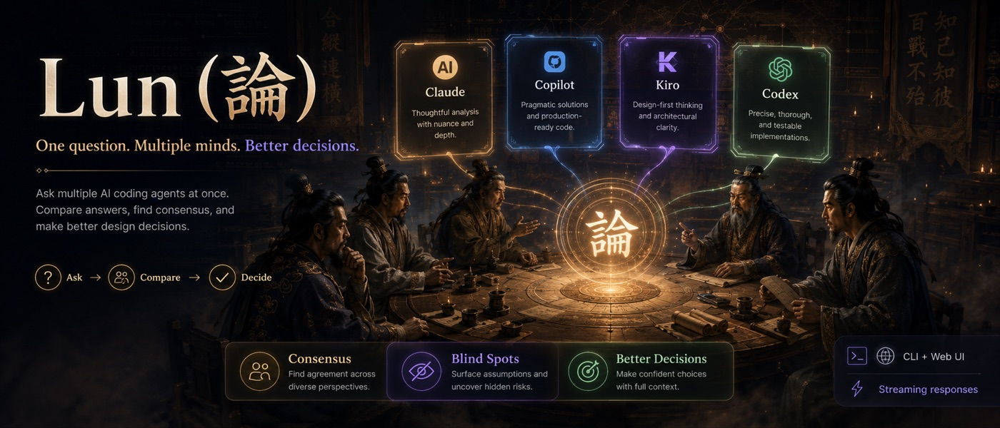

Why I built this
I'm SOONSOON, a developer working in Korea. I run startups, I make games, and I've loved building things for as long as I can remember. For years I've also taught and mentored students working with AI.
The biggest gap I kept seeing was this: people rarely get to experience the difference. There are so many models now, and the closer you are to the beginning — amateur, student — the more it matters to try them all and feel how they actually diverge. When we accept that difference and reason from it, we get closer to the truth.
Claude Code, Codex, Copilot, Kiro — the LLMs from these remarkable companies, and the agents that drive them, answer the same problem in genuinely different ways. That makes problem-solving richer. The choosing, the direction — that part is still ours.
Long ago, out of an age scarred by war and conquest, thought bloomed — the Hundred Schools of Thought. Today, alongside AI, we get to talk, challenge, argue, and debate our way toward answers of our own.

I hope Lun helps this developer culture, even a little. It's free for anyone to use, and I genuinely look forward to the forks and variants people will build.
MIT-licensed and free for everyone. Fork it, bend it, make it yours.
Lun runs other companies' AI agents through the daemon, so it lives by their terms. It could be blocked or vanish — or more agents could join. Strangely like watching an ancient society take shape.
This entire project was coded from day one by AI agents alone — Codex (GPT-5.5) and Kiro (Opus 4.7), running lun on each other as they built it.
— SOONSOON · Seoul